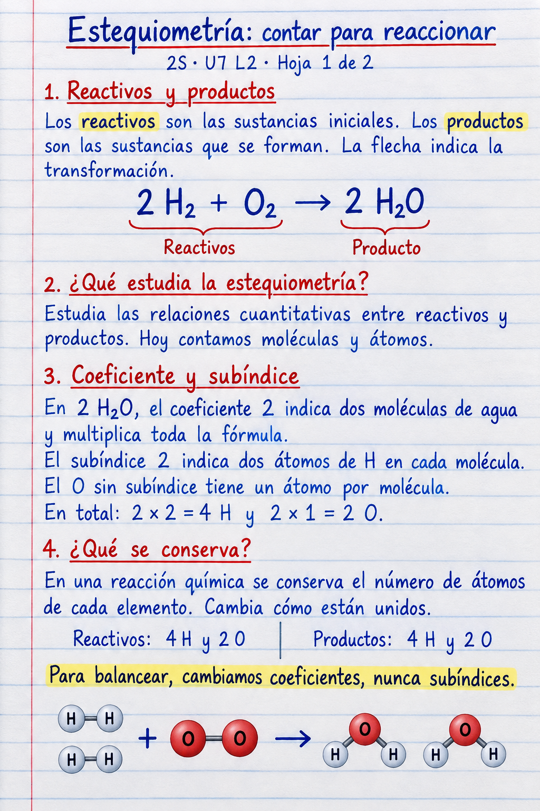
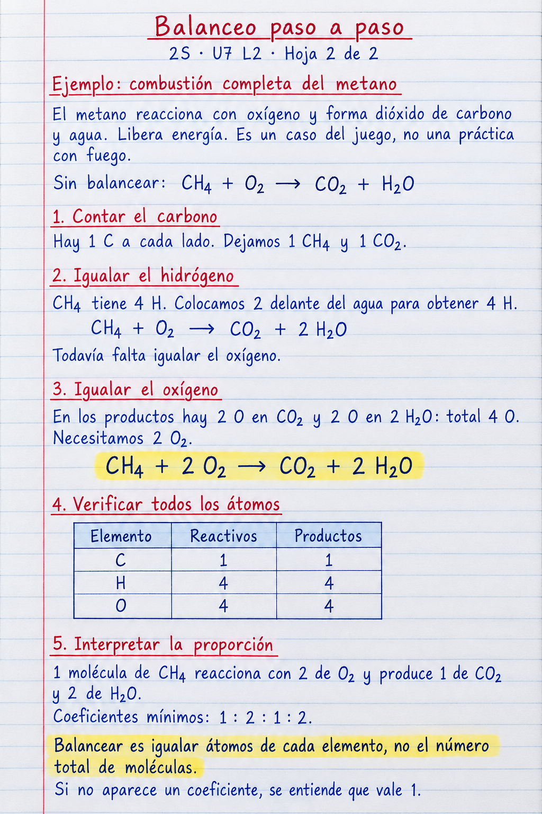

<!doctype html>
<html lang="es">
<meta charset="utf-8">
<meta name="viewport" content="width=device-width, initial-scale=1">
<title>Estequiometría y balanceo · 2S U7 L2</title>
<style>
body{margin:0;background:#f4f6f5;color:#172f39;font:16px/1.5 system-ui,sans-serif}header,main{max-width:1000px;margin:auto;padding:20px}header{display:flex;gap:16px;align-items:center;flex-wrap:wrap}h1{font-size:24px;margin:0}nav{display:flex;flex-wrap:wrap;gap:16px}a{color:#075d73}figure{margin:0 0 32px}figcaption{margin-bottom:8px}img{display:block;width:100%;height:auto;background:white}a:focus-visible{outline:3px solid #b54820;outline-offset:4px}@media print{header{display:none}main{padding:0}figure{break-after:page;margin:0}figcaption{display:none}img{max-height:98vh;object-fit:contain}}
</style>
<header><h1>Estequiometría y balanceo</h1><nav aria-label="Recursos"><a href="01-estequiometria-cuaderno.png">Hoja 1</a><a href="02-balanceo-metano-cuaderno.png">Hoja 2</a><a href="../../../l01/p03/exploradores-moleculas/#r-agua">Juego: 30 ecuaciones</a></nav></header>
<main>
<figure><figcaption>2S · U7 L2 · Reactivos, productos y proporciones</figcaption><a href="01-estequiometria-cuaderno.png"></a></figure>
<figure><figcaption>Ejercicio resuelto: combustión completa del metano</figcaption><a href="02-balanceo-metano-cuaderno.png"></a></figure>
</main>
</html>
